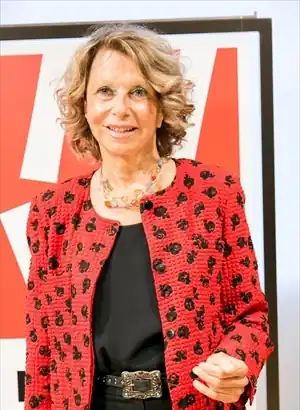
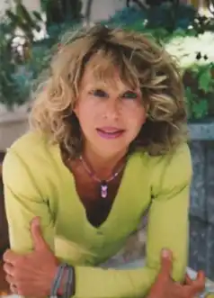

Анджела Нанетті (італ. Angela Nanetti; нар. 8 листопада 1942, Будріо, Італія) — італійська письменниця, автор книжок для дітей та підлітків, перекладених більше ніж на 20 мов. Почесний член Національної спілки письменників і художників Італії.
Анджела Нанетті народилася в Будріо, провінції Болоньї. Закінчила місцеву школу та коледж в Болоньї, навчалася в Болонському університеті за спеціальністю "Середньовічна історія". Переїхала в м. Пескара, де викладала італійську мову в молодшій та середній школі. У 80-х роках співпрацювала з Інститутом Італійської енциклопедії, працювала над мультимедійним проектом для італійських дітей, що проживають за кордоном. Редагувала антологію для підлітків "Послання в пляшці" (Messaggi in bottiglia).
У 1984 році Анджела Нанетті написала свою першу дитячу книгу "Спогади Адальберто" (Le memorie di Adalberto), яка одразу принесла їй популярність. З того часу письменниця постійно співпрацювала з італійським видавництвом "Einaudi Ragazzi". У 1995 році залишила викладання і повністю присвятила себе творчості. Повість "Мій дідусь був черешнею" (1998) — родинна історія, розказана від імені маленького хлопчика Тоніно — перекладена 23-ма мовами і відзначена літературними преміями Німеччини, Франції та Словаччини. Книжка увійшла до світового каталогу дитячих книжок "Білі круки" (The White Ravens). У 2003 році була видана повість "Чоловік, який вирощував комети". У 2003 році книжка увійшла до каталогу "Білі круки". Нагороди 1994 — увійшла до Почесного листа IBBY (Міжнародна рада з дитячої та юнацької книги); 1998 — переможець Літературної премії "Fondazione Cassa di Risparmio di Cento" за "Мій дідусь був черешнею"; 2003 — номінація "Найкращий автор" Національної премії Андерсена; 2004 — номінація на Премію імені Г. К. Андерсена; 2005 — Премія міста Будріо (Італія) у День проголошення Республіки; 2006 — увійшла до Міжнародної ради з дитячої та юнацької книги; 2010 — переможець Літературної премії "Fondazione Cassa di Risparmio di Cento" за "La compagnia della pioggia"; 2012, 2013, 2014 — кандидат на Премію імені Астрід Ліндгрен. Українські переклади Мій дідусь був черешнею Чоловік, який вирощував комети